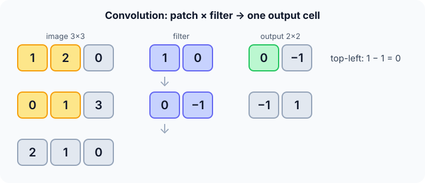

Prerequisites
- The MLP: weighted sums and activations.
- Matrices and element-wise products.
- Images as grids of pixel values.
The analogy
Everyday analogy
Imagine scanning a page with a small magnifying glass that only recognises one shape, say a vertical edge. You slide it over every spot and note how strongly the shape appears there.
A convolutional filter is that magnifying glass, and its output is a map of where the shape appears. A CNN learns many such filters, and later layers combine edges into eyes, wheels and faces.
How it works
Output size: for input width $W$, filter size $F$, padding $P$ and stride $S$: $\text{out} = \frac{W - F + 2P}{S} + 1$.
Start with one convolution by hand
Image $\begin{bmatrix} 1 & 2 & 0 \\ 0 & 1 & 3 \\ 2 & 1 & 0 \end{bmatrix}$, filter $\begin{bmatrix} 1 & 0 \\ 0 & -1 \end{bmatrix}$, stride 1, no padding. Predict, then open "Check".
Example: predict before you read
Step 1. Top-left patch $\begin{bmatrix} 1 & 2 \\ 0 & 1 \end{bmatrix}$: multiply element-wise with the filter and sum.
Check
$1 \cdot 1 + 2 \cdot 0 + 0 \cdot 0 + 1 \cdot (-1) = 0$.
Step 2. Cover the next line and guess: top-right patch $\begin{bmatrix} 2 & 0 \\ 1 & 3 \end{bmatrix}$.
Check
$2 - 3 = -1$.
Step 3. Bottom row of patches. Predict the full output.
Check
Bottom-left $\begin{bmatrix} 0 & 1 \\ 2 & 1 \end{bmatrix} \to 0 - 1 = -1$; bottom-right $\begin{bmatrix} 1 & 3 \\ 1 & 0 \end{bmatrix} \to 1 - 0 = 1$. Output $\begin{bmatrix} 0 & -1 \\ -1 & 1 \end{bmatrix}$.

Quick recall: Before reading further, cover the text above and say out loud: what does one output cell of a convolution compute?
Check your answer
The sum of the element-wise products between the filter and the image patch under it (plus a bias).
Finish the picture: sizes and parameters
A real layer: input 32 × 32 × 3 (RGB), 16 filters of size 5 × 5, padding 2, stride 1.
- Output size. Predict it.
Check
$(32 - 5 + 2 \cdot 2)/1 + 1 = 32$, so 32 × 32 × 16 (one channel per filter).
- Parameters, compared with a dense layer. Predict both.
Check
Conv: $(5 \cdot 5 \cdot 3 + 1) \cdot 16 = 1{,}216$. A dense layer from 3,072 inputs to 16,384 outputs would need about 50 million weights.
Quick recall: Without scrolling up, say out loud: what output size does a 32 × 32 input give with a 5 × 5 filter, padding 2, stride 1?
Check your answer
$(32 - 5 + 4)/1 + 1 = 32$: padding 2 keeps the size.
Full worked calculation
The page's convolution, the 3 × 3 image $\begin{bmatrix} 1 & 2 & 0 \\ 0 & 1 & 3 \\ 2 & 1 & 0 \end{bmatrix}$ with the 2 × 2 filter $\begin{bmatrix} 1 & 0 \\ 0 & -1 \end{bmatrix}$, computed at every position, then bias and ReLU, output sizes with padding and stride, and the parameter count.
| Position (row, col) | Patch | Products | Sum | After ReLU |
|---|---|---|---|---|
| (0, 0) | [[1, 2], [0, 1]] | 1·1 + 2·0 + 0·0 + 1·(−1) | 0 | 0 |
| (0, 1) | [[2, 0], [1, 3]] | 2·1 + 0·0 + 1·0 + 3·(−1) | −1 | 0 |
| (1, 0) | [[0, 1], [2, 1]] | 0·1 + 1·0 + 2·0 + 1·(−1) | −1 | 0 |
| (1, 1) | [[1, 3], [1, 0]] | 1·1 + 3·0 + 1·0 + 0·(−1) | 1 | 1 |
-
1Place the filter at the top-left
$$\begin{bmatrix} 1 & 2 \\ 0 & 1 \end{bmatrix} \odot \begin{bmatrix} 1 & 0 \\ 0 & -1 \end{bmatrix} = \begin{bmatrix} 1 & 0 \\ 0 & -1 \end{bmatrix} \;\Rightarrow\; \text{sum} = 0$$Multiply element by element and add. This filter computes "top-left minus bottom-right", a diagonal edge detector: 0 means no change along the diagonal here.
-
2Slide one step right
$$\text{patch } \begin{bmatrix} 2 & 0 \\ 1 & 3 \end{bmatrix}: \; 2 - 3 = -1$$Only the two diagonal corners matter for this filter. The bottom-right is brighter than the top-left, so the response is negative.
-
3Finish the grid
$$\text{output} = \begin{bmatrix} 0 & -1 \\ -1 & 1 \end{bmatrix}$$Four positions fit (two across, two down), so the output is 2 × 2. Each output number says how strongly the pattern is present at that place.
-
4Bias and ReLU
$$\text{bias } 0, \;\; \text{ReLU} \;\Rightarrow\; \begin{bmatrix} 0 & 0 \\ 0 & 1 \end{bmatrix}$$Like any neuron, the filter has one bias added at every position, then an activation. ReLU keeps only the place where the pattern clearly appears: bottom-right.
-
5Output size formula
$$\text{out} = \frac{W - F + 2P}{S} + 1: \quad \frac{3 - 2 + 0}{1} + 1 = 2, \qquad \text{with } P = 1: \; \frac{3 - 2 + 2}{1} + 1 = 4$$$W$ input width, $F$ filter size, $P$ padding, $S$ stride. Padding with zeros lets the filter also sit on the borders. For a 32-wide image, a 5 × 5 filter with $P = 2$ and $S = 1$ keeps the size: $(32 - 5 + 4) + 1 = 32$.
-
6Count the parameters
$$\text{conv: } 2 \cdot 2 + 1 = 5, \qquad \text{dense layer } 9 \to 4: \; 9 \cdot 4 + 4 = 40$$The same 5 numbers are reused at every position (weight sharing). A dense layer producing 4 outputs from 9 pixels needs 8 times more, and the gap grows enormously with real image sizes.
What the numbers tell us
A convolution slides one small filter over the image: multiply, add, add the bias, apply ReLU. Here it found the diagonal pattern only at the bottom-right.
Because the filter is shared, a CNN has few parameters and detects a pattern wherever it appears in the image.
The rule in plain words
A convolutional layer slides each small filter over the input (with a stride, after optional zero padding) and computes a weighted sum at every position, producing one feature map per filter.
Stack conv layers (with ReLU and pooling) to detect increasingly complex patterns, then finish with dense layers for the prediction.
Quick recall: Before you read the code, describe a valid 2-D convolution in your own words. Then check below.
Check your answer
For every position where the filter fits inside the image, multiply each filter weight by the pixel under it, add them up, and write the sum to the matching output cell.
The code
Read this code after you have convolved the 3 × 3 image by hand. It will make more sense.
int conv_out_size(int w, int f, int pad, int stride) { /* integer division rounds down */
return (w - f + 2 * pad) / stride + 1;
}void conv2d(double img[][3], int n, double k[][2], int f, double out[][2]) { /* valid, stride 1 */
for (int r = 0; r + f <= n; r++)
for (int c = 0; c + f <= n; c++) {
double s = 0;
for (int i = 0; i < f; i++)
for (int j = 0; j < f; j++) s += img[r + i][c + j] * k[i][j]; /* patch × filter */
out[r][c] = s;
}
}Definition
What you just did, in one line: a convolutional neural network uses layers that slide small learned filters over the input, computing a weighted sum at each position, so the same weights detect a pattern anywhere in the image.
flowchart LR
I["image 32×32×3"] --> C1["conv 5×5, 16 filters + ReLU"]
C1 --> P1["pool 2×2 → 16×16×16"]
P1 --> C2["conv + ReLU"]
C2 --> P2["pool"]
P2 --> F["flatten → dense → softmax"]
Putting numbers on it
Quick recall: Before looking at the formula, predict: how many weights does a layer of 16 filters of size 5 × 5 on an RGB image have?
Check your answer
$(5 \cdot 5 \cdot 3 + 1) \cdot 16 = 1{,}216$, whatever the image size.
The two numbers to know for every conv layer:
$$\text{out} = \frac{W - F + 2P}{S} + 1 = \frac{32 - 5 + 4}{1} + 1 = 32, \qquad \#\text{params} = (F \cdot F \cdot C_{\text{in}} + 1) \cdot C_{\text{out}} = 1{,}216$$| Input | Filter | Padding | Stride | Output width |
|---|---|---|---|---|
| 3 | 2 | 0 | 1 | 2 (our example) |
| 32 | 5 | 2 | 1 | 32 ("same" padding) |
| 32 | 5 | 0 | 1 | 28 |
| 32 | 3 | 1 | 2 | 16 |
| 224 | 7 | 3 | 2 | 112 |
Warning
The output-size formula must give a whole number. If $(W - F + 2P)/S$ isn't an integer, the filter doesn't fit evenly; libraries silently drop the leftover border, which can surprise you.
Exam tip
Exams almost always ask for an output size and a parameter count. Write both formulas first, then plug in; remember the $+1$ bias per filter and the input channels $C_{\text{in}}$.
Common mistakes
- Forgetting the input channels when counting parameters (a 5 × 5 filter on RGB has 75 weights, not 25).
- Forgetting the $+1$ in the output-size formula.
- Thinking the parameter count depends on the image size; it doesn't, because the filter is shared.
Try it yourself
Exercise 1 (warm-up)
Input 28 × 28, filter 3 × 3, no padding, stride 1. Output size?
Hint
$(28 - 3)/1 + 1$.
Answer
26 × 26.
Exercise 2 (a bit harder)
Input 64 × 64 × 3, 32 filters of 3 × 3, padding 1, stride 2. Give the output shape and the number of parameters. Write your answer down before you open it.
Show answer
Width $(64 - 3 + 2)/2 + 1 = 32$ (31.5 rounded down, plus 1): output 32 × 32 × 32. Parameters $(3 \cdot 3 \cdot 3 + 1) \cdot 32 = 896$.
Did you know?
Did you know?
Yann LeCun's LeNet read handwritten cheque amounts for US banks in the 1990s; AlexNet (2012) scaled the same idea up on GPUs and started the deep-learning boom.
Filters in the first layer of a trained CNN look like edge and colour-blob detectors, much like cells in the visual cortex that Hubel and Wiesel discovered in the 1960s.
Key points to remember
If you remember one thing from each line, remember the because.
- Convolution finds patterns anywhere because the same filter is applied at every position.
- CNNs need few parameters because a filter's weights are shared across the whole image.
- Padding preserves size because extra border pixels let the filter cover the edges.
- Stride shrinks the output because the filter skips positions.
- Deeper layers see bigger patterns because each layer combines features from a wider area of the input.
Self-check questions
Answer these in order, out loud. They follow the page, so your answers become the script of your video.
- How is a convolutional filter like a magnifying glass that recognises one shape?
Sample answer
It slides over every spot of the image and reports how strongly its shape appears there, producing a map of matches.
- Convolve the 3 × 3 image with the filter [[1, 0], [0, −1]].
Sample answer
The four patches give 0, −1, −1, 1, so the output is [[0, −1], [−1, 1]].
- Why does the loop run while
r + f <= n?A good answer mentions where the filter fits.
Sample answer
The filter of size $f$ must fit entirely inside the image; the last valid top-left row is $n - f$, which gives $n - f + 1$ output rows.
- So what is a CNN, in one sentence?
Sample answer
A neural network whose layers slide small learned filters over the input, sharing weights across positions to detect local patterns.
- Why does a conv layer have far fewer parameters than a dense layer on images?
A good answer mentions sharing.
Sample answer
A dense layer connects every pixel to every output; a conv layer reuses the same small filter everywhere, so its weights don't grow with the image size.
- Give the output-size and parameter formulas.
Sample answer
Output $= (W - F + 2P)/S + 1$; parameters $= (F \cdot F \cdot C_{\text{in}} + 1) \cdot C_{\text{out}}$.
- Compute the output size for 32 × 32 input, 5 × 5 filter, padding 2, stride 1.
Sample answer
$(32 - 5 + 4)/1 + 1 = 32$.
- If you had to teach this to a friend in 2 minutes, what would you leave out, and why?
Sample answer
I'd leave out stride and the parameter formula. I'd keep the magnifying-glass analogy, the 3 × 3 convolution, and "shared small filters find local patterns anywhere".
External resources
- Stanford CS231n: Convolutional networks: the standard explanation, with an animated demo.
- CNN Explainer: an interactive visualisation of a small CNN.
- PyTorch docs: nn.Conv2d: shape formulas and parameters.
Videos
- 3Blue1Brown: But what is a convolution?: convolution explained visually.